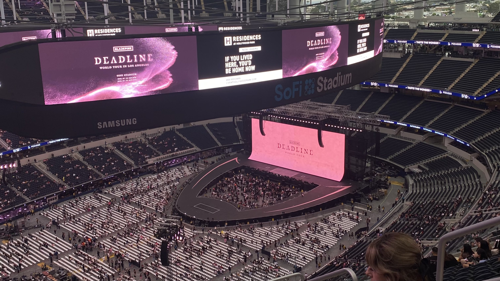

I'm originally from Agoura Hills, CA, and spent most of my life living there. For a brief point in time, I spent a year living in East Lansing, MI, where I learned to love the cold. However, in missing the warmth of California, I made my return.
When I'm not studying linguistics, I love exploring new cafés, playing board games, and learning new skills for fun. Most summers, you might find me taking courses at Moorpark College to expand my knowledge or feed into new hyperfixations. I am also constantly looking to expand my board game collection and specifically love tabletops. Right now, my current collection totals up to 80 games!
Musically, I gravitate towards the shoegaze/dreampop genre, but some would say I am a Taylor Swift fanatic. In the past, I have also enjoyed playing my viola, though truthfully, I am rusty.
